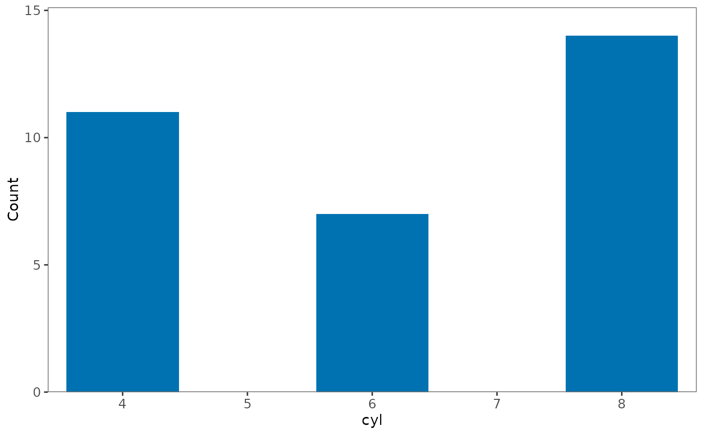
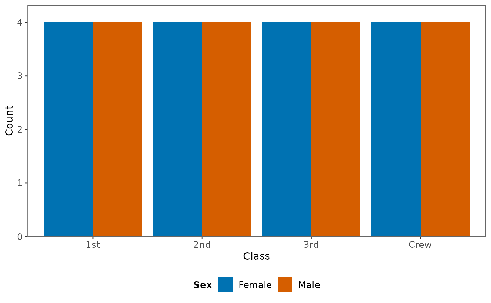
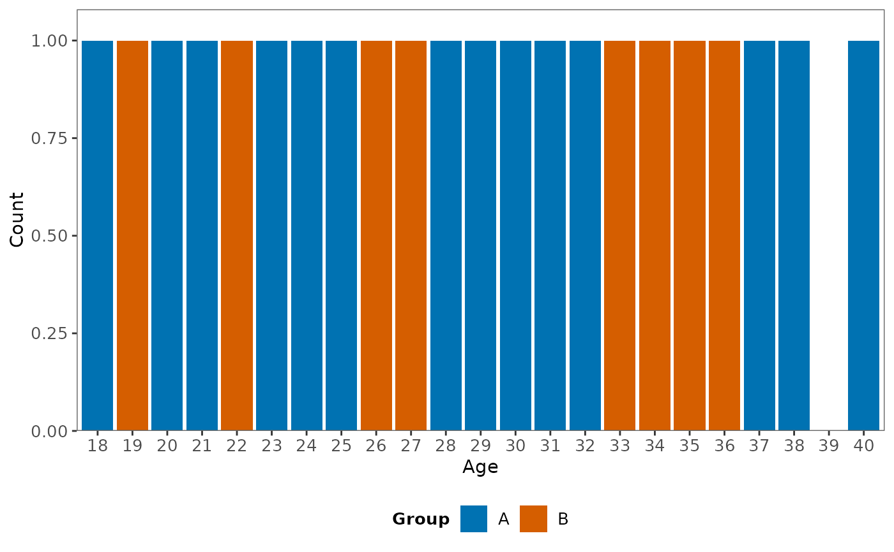

Generate highly customizable bar plots using categorical variables from a data frame, tibble, or matrix. The function supports stacked, dodged, and filled bar plots, optional grouping, automatic color-blind friendly palettes, percentage or count displays, optional coordinate flipping, and automatic handling of missing numeric axis levels.
Usage
plot_bar(
x,
by = NULL,
plot_type = "stacked",
colors = "auto",
x_axis,
show_y_as = "n",
show_values = FALSE,
fill_missing_levels = TRUE,
arrange_x = NULL,
x_axis_label = NULL,
y_axis_label = NULL,
title = NULL,
subtitle = NULL,
caption = NULL,
legend = NULL,
legend_position = "bottom",
flip = FALSE,
base_size = 11,
title_size = NULL,
subtitle_size = NULL,
caption_size = NULL,
legend_size = NULL,
xlab_size = NULL,
ylab_size = NULL,
axis_text_size = NULL,
label_size = NULL,
theme = "nature"
)Arguments
- x
A data frame, tibble, or matrix containing the variables to plot.
- by
A single character string specifying a categorical grouping variable used to split the bars. Default is
NULL.- plot_type
Character string specifying the bar plot type. Supported options are:
"stacked": stacked bar plot"dodged": side-by-side grouped bars"filled": proportional stacked bar plot
Default is
"stacked".- colors
Either
"auto"for automatic Okabe-Ito color palette generation or a character vector of valid color names or HEX color codes. Ifbyis notNULL, the length ofcolorsmust match the number of unique categories inby.- x_axis
A single character string specifying the column name to use on the x-axis.
- show_y_as
Character string specifying y-axis display:
"n": counts"p": percentages
Default is
"n".- show_values
Logical. If
TRUE, count or percentage labels are displayed on the bars. Default isFALSE.- fill_missing_levels
Logical. Default is
TRUE. Ifx_axisis numeric, all integer values between the minimum and maximum observed values will be displayed on the axis, including values with zero counts. This is not a missing-value imputation procedure.- arrange_x
Optional vector specifying the desired ordering of x-axis categories. Categories not listed will generate an error. Missing values can be included using
NA.- x_axis_label
Optional character string for x-axis label. Defaults to
x_axis.- y_axis_label
Optional character string for y-axis label. Defaults to
"Count"or"Percent"depending onshow_y_as.- title
Optional character string specifying plot title.
- subtitle
Optional character string specifying plot subtitle.
- caption
Optional character string specifying plot caption.
- legend
Optional character string specifying legend title. Defaults to
by.- legend_position
Character string specifying legend position. Supported options are
"bottom","top","left", and"right". Default is"bottom".- flip
Logical. If
TRUE, flips the plot coordinates usingggplot2::coord_flip(). Default isFALSE.- base_size
Base font size in points; every text element scales from it. Default is
11, which suits a default 7 x 5 inch Quarto figure.- title_size, subtitle_size, caption_size, legend_size, xlab_size, ylab_size, axis_text_size, label_size
Font sizes in points for the title, subtitle, caption, legend, x-axis label, y-axis label, tick labels and value labels. Default
NULLderives each frombase_size.- theme
Character string specifying ggplot2 theme style. Supported options are:
"nature""minimal""classic""bw""light""dark"
Default is
"nature".
Details
This function is designed for publication-ready categorical bar plots with minimal user setup. Numeric x-axis variables are treated as categorical while preserving numeric ordering.
The default "auto" color mode uses the Okabe-Ito color-blind friendly
palette:
"#0072B2", "#D55E00", "#009E73", "#56B4E9",
"#E69F00", "#CC79A7", "#F0E442", "#000000"
Missing values are explicitly displayed as "NA".
Gridlines are removed by default for a cleaner publication-ready appearance.
References
Wickham H (2016). ggplot2: Elegant Graphics for Data Analysis. Springer-Verlag New York. doi:10.1007/978-3-319-24277-4
Okabe M, Ito K (2008). Color Universal Design (CUD): How to make figures and presentations that are friendly to colorblind people. https://jfly.uni-koeln.de/color/
Examples
# Basic count plot
plot_bar(
x = mtcars,
x_axis = "cyl"
)

# Dodged grouped plot
plot_bar(
x = as.data.frame(Titanic),
x_axis = "Class",
by = "Sex",
plot_type = "dodged"
)

# Numeric x-axis with missing levels shown
set.seed(1)
df <- data.frame(
Age = c(18:38, 40),
Group = sample(c("A", "B"), 22, TRUE)
)
plot_bar(
x = df,
x_axis = "Age",
by = "Group"
)
